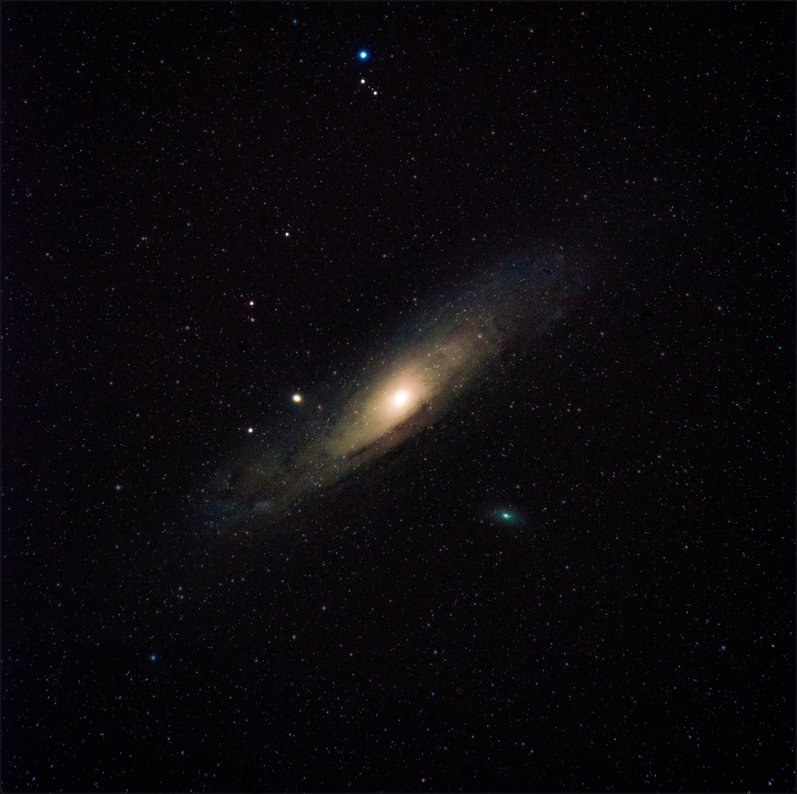
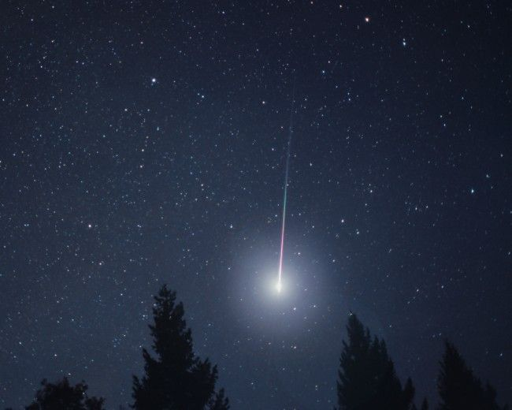

Apraksts

Zemei tuvākā zvaigzne (neskaitot Sauli) ir Centaura Alfa, kura atrodas nepilnu 4,3
gaismas gadu attālumā no Zemes. Vislabāk kosmosā izpētītas ir Saulei tuvākās
zvaigznes. Savukārt 20 gaismas gadu attālumā Saulei tuvākās ir aptuveni 100 zvaigznes.
Tomēr lielie attālumi līdz zvaigznēm mūsdienās nav šķērslis, lai tās izpētītu.
Dažas zvaigznes Visumā ir ļoti līdzīgas Saulei, citas ir savādākas.
Tās atšķiras gan pēc spožuma, gan pēc krāsas — ir zilas, sarkanas, dzeltenas,
oranžas zvaigznes. Lielās atšķirības zvaigznēm var noteikt, pētot ar teleskopu.
Pētot ar teleskopu, tika atklātas ļoti daudz un dažādas zvaigžņu atšķirības.
Ķīmiskais sastāvs
Zvaigznes sastāv no 70% ūdeņraža un 28% hēlija, kā arī no smagākiem elementiem.
Daļa smagāko elementu tiek mērīti dzelzs satura izteiksmē zvaigžņu atmosfērā,
jo dzelzs ir kopīgs elements un to ir relatīvi viegli izmērīt. Tā kā ir molekulārie mākoņi,
kuros zvaigznes ir bagātinātas ar smagākajiem elementiem no pārnovu sprādzieniem, to
zvaigžņu ķīmisko sastāvu noteikšana var tikt lietota kā zvaigžņu vecuma noteikšana.
Daļa smagāko elementu var arī būt kā varbūtības rādītājs, ka zvaigznēm ir planētu sistēma.
Zvaigzne ar zemāko dzelzs saturu, kura ir izmērīta, ir punduris HE1327-2326.
Kā pretstats, zvaigznei, kas pārbagāta ar metāliem μ Leonis ir tikpat kā dubultliels
dzelzs sastāvs kā Saulei, toties planētai-zvaigznei 14 Herculis dzelzs daudzums ir tikpat
kā trīskāršots.
Zvaigžņu mūžs

Zvaigžņu mūžs var ilgt miljoniem un pat miljardiem gadu.
Zvaigznes veidojas no
starpzvaigžņu gāzes vai putekļu mākoņiem, kas ar laiku saspiežas. Tiem saspiežoties,
sāk izdalīties siltums, kas paaugstina mākoņu temperatūru līdz sākas kodolreakcijas.
Kad zvaigznē ūdeņraža krājumi ir izsīkuši, tā atdziest un izplešas ārējais apvalks un
kļūst par sarkano milzi. Tālākā zvaigznes attīstība un evolūcija ir atkarīga no zvaigznes
masas.
Ja zvaigznes masa ir neliela, no tās centrālās daļas izveidojas baltais punduris,
apvalks tiek nomests un tas izveido miglāju.
Ja zvaigžņu masa ir liela, tajā rodas arvien jauni ķīmiskie elementi,
kodols saspiežas un apvalks tiek nomests pārnovas sprādziena rezultātā.
Un atkal tālākais zvaigznes mūžs ir atkarīgs no palikušās masas. Ja tā nav pārāk liela,
izveidojas neitrona zvaigzne. Neitrona zvaigznes ir ļoti mazas, to diametrs ir apmēram 20-30 km.
Tām ir liels blīvums, tās ir karstas un ātri griežas. Neitronu zvaigznes gabals metamā kauliņa
lielumā sver simtiem miljonu tonnu. Ja zvaigznes atlikusī masa ir lielāka par divkāršotu Saules
masu, tad spēcīgās saspiešanas — gravitācijas kolapsa - rezultātā izveidojas melnais caurums.
Melnie caurumi ir ļoti mazi. Visumā veidojas „melnie tukšumi” un tikai spēcīgākas gravitācijas
dēļ, var noteikt, ka tur ir melnais caurums. Melnā cauruma tuvumā mainās telpa un laiks. To var
ieraudzīt tikai tad, ja tajā krīt viela, kas izstaro.
Vairāk par zvaigznēm lasi šeit!